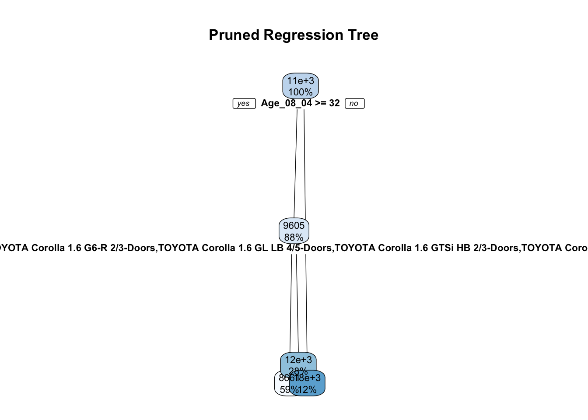
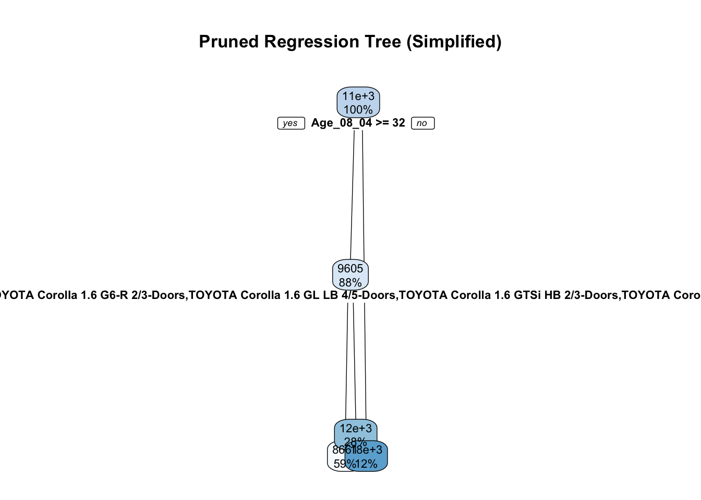

Id Model Price Age_08_04 Mfg_Month
1 1 TOYOTA Corolla 2.0 D4D HATCHB TERRA 2/3-Doors 13500 23 10
2 2 TOYOTA Corolla 2.0 D4D HATCHB TERRA 2/3-Doors 13750 23 10
3 3 TOYOTA Corolla 2.0 D4D HATCHB TERRA 2/3-Doors 13950 24 9
4 4 TOYOTA Corolla 2.0 D4D HATCHB TERRA 2/3-Doors 14950 26 7
5 5 TOYOTA Corolla 2.0 D4D HATCHB SOL 2/3-Doors 13750 30 3
6 6 TOYOTA Corolla 2.0 D4D HATCHB SOL 2/3-Doors 12950 32 1
Mfg_Year KM Fuel_Type HP Met_Color Color Automatic CC Doors Cylinders
1 2002 46986 Diesel 90 1 Blue 0 2000 3 4
2 2002 72937 Diesel 90 1 Silver 0 2000 3 4
3 2002 41711 Diesel 90 1 Blue 0 2000 3 4
4 2002 48000 Diesel 90 0 Black 0 2000 3 4
5 2002 38500 Diesel 90 0 Black 0 2000 3 4
6 2002 61000 Diesel 90 0 White 0 2000 3 4
Gears Quarterly_Tax Weight Mfr_Guarantee BOVAG_Guarantee Guarantee_Period ABS
1 5 210 1165 0 1 3 1
2 5 210 1165 0 1 3 1
3 5 210 1165 1 1 3 1
4 5 210 1165 1 1 3 1
5 5 210 1170 1 1 3 1
6 5 210 1170 0 1 3 1
Airbag_1 Airbag_2 Airco Automatic_airco Boardcomputer CD_Player Central_Lock
1 1 1 0 0 1 0 1
2 1 1 1 0 1 1 1
3 1 1 0 0 1 0 0
4 1 1 0 0 1 0 0
5 1 1 1 0 1 0 1
6 1 1 1 0 1 0 1
Powered_Windows Power_Steering Radio Mistlamps Sport_Model Backseat_Divider
1 1 1 0 0 0 1
2 0 1 0 0 0 1
3 0 1 0 0 0 1
4 0 1 0 0 0 1
5 1 1 0 1 0 1
6 1 1 0 1 0 1
Metallic_Rim Radio_cassette Parking_Assistant Tow_Bar
1 0 0 0 0
2 0 0 0 0
3 0 0 0 0
4 0 0 0 0
5 0 0 0 0
6 0 0 0 0Data Mining: Problem Set 3
Introduction
This analysis aims to explore and model the Toyota Corolla dataset to determine the influence of various factors on the price.
The first few rows of the dataset are:
Checking the structure and summary of the dataset provides us with an overview of the type of variables and basic statistics.
str(data)'data.frame': 1436 obs. of 39 variables:
$ Id : int 1 2 3 4 5 6 7 8 9 10 ...
$ Model : chr "TOYOTA Corolla 2.0 D4D HATCHB TERRA 2/3-Doors" "TOYOTA Corolla 2.0 D4D HATCHB TERRA 2/3-Doors" "TOYOTA Corolla 2.0 D4D HATCHB TERRA 2/3-Doors" "TOYOTA Corolla 2.0 D4D HATCHB TERRA 2/3-Doors" ...
$ Price : int 13500 13750 13950 14950 13750 12950 16900 18600 21500 12950 ...
$ Age_08_04 : int 23 23 24 26 30 32 27 30 27 23 ...
$ Mfg_Month : int 10 10 9 7 3 1 6 3 6 10 ...
$ Mfg_Year : int 2002 2002 2002 2002 2002 2002 2002 2002 2002 2002 ...
$ KM : int 46986 72937 41711 48000 38500 61000 94612 75889 19700 71138 ...
$ Fuel_Type : chr "Diesel" "Diesel" "Diesel" "Diesel" ...
$ HP : int 90 90 90 90 90 90 90 90 192 69 ...
$ Met_Color : int 1 1 1 0 0 0 1 1 0 0 ...
$ Color : chr "Blue" "Silver" "Blue" "Black" ...
$ Automatic : int 0 0 0 0 0 0 0 0 0 0 ...
$ CC : int 2000 2000 2000 2000 2000 2000 2000 2000 1800 1900 ...
$ Doors : int 3 3 3 3 3 3 3 3 3 3 ...
$ Cylinders : int 4 4 4 4 4 4 4 4 4 4 ...
$ Gears : int 5 5 5 5 5 5 5 5 5 5 ...
$ Quarterly_Tax : int 210 210 210 210 210 210 210 210 100 185 ...
$ Weight : int 1165 1165 1165 1165 1170 1170 1245 1245 1185 1105 ...
$ Mfr_Guarantee : int 0 0 1 1 1 0 0 1 0 0 ...
$ BOVAG_Guarantee : int 1 1 1 1 1 1 1 1 1 1 ...
$ Guarantee_Period : int 3 3 3 3 3 3 3 3 3 3 ...
$ ABS : int 1 1 1 1 1 1 1 1 1 1 ...
$ Airbag_1 : int 1 1 1 1 1 1 1 1 1 1 ...
$ Airbag_2 : int 1 1 1 1 1 1 1 1 0 1 ...
$ Airco : int 0 1 0 0 1 1 1 1 1 1 ...
$ Automatic_airco : int 0 0 0 0 0 0 0 0 0 0 ...
$ Boardcomputer : int 1 1 1 1 1 1 1 1 0 1 ...
$ CD_Player : int 0 1 0 0 0 0 0 1 0 0 ...
$ Central_Lock : int 1 1 0 0 1 1 1 1 1 0 ...
$ Powered_Windows : int 1 0 0 0 1 1 1 1 1 0 ...
$ Power_Steering : int 1 1 1 1 1 1 1 1 1 1 ...
$ Radio : int 0 0 0 0 0 0 0 0 1 0 ...
$ Mistlamps : int 0 0 0 0 1 1 0 0 0 0 ...
$ Sport_Model : int 0 0 0 0 0 0 1 0 0 0 ...
$ Backseat_Divider : int 1 1 1 1 1 1 1 1 0 1 ...
$ Metallic_Rim : int 0 0 0 0 0 0 0 0 1 0 ...
$ Radio_cassette : int 0 0 0 0 0 0 0 0 1 0 ...
$ Parking_Assistant: int 0 0 0 0 0 0 0 0 0 0 ...
$ Tow_Bar : int 0 0 0 0 0 0 0 0 0 0 ...summary(data) Id Model Price Age_08_04
Min. : 1.0 Length:1436 Min. : 4350 Min. : 1.00
1st Qu.: 361.8 Class :character 1st Qu.: 8450 1st Qu.:44.00
Median : 721.5 Mode :character Median : 9900 Median :61.00
Mean : 721.6 Mean :10731 Mean :55.95
3rd Qu.:1081.2 3rd Qu.:11950 3rd Qu.:70.00
Max. :1442.0 Max. :32500 Max. :80.00
Mfg_Month Mfg_Year KM Fuel_Type
Min. : 1.000 Min. :1998 Min. : 1 Length:1436
1st Qu.: 3.000 1st Qu.:1998 1st Qu.: 43000 Class :character
Median : 5.000 Median :1999 Median : 63390 Mode :character
Mean : 5.549 Mean :2000 Mean : 68533
3rd Qu.: 8.000 3rd Qu.:2001 3rd Qu.: 87021
Max. :12.000 Max. :2004 Max. :243000
HP Met_Color Color Automatic
Min. : 69.0 Min. :0.0000 Length:1436 Min. :0.00000
1st Qu.: 90.0 1st Qu.:0.0000 Class :character 1st Qu.:0.00000
Median :110.0 Median :1.0000 Mode :character Median :0.00000
Mean :101.5 Mean :0.6748 Mean :0.05571
3rd Qu.:110.0 3rd Qu.:1.0000 3rd Qu.:0.00000
Max. :192.0 Max. :1.0000 Max. :1.00000
CC Doors Cylinders Gears Quarterly_Tax
Min. : 1300 Min. :2.000 Min. :4 Min. :3.000 Min. : 19.00
1st Qu.: 1400 1st Qu.:3.000 1st Qu.:4 1st Qu.:5.000 1st Qu.: 69.00
Median : 1600 Median :4.000 Median :4 Median :5.000 Median : 85.00
Mean : 1577 Mean :4.033 Mean :4 Mean :5.026 Mean : 87.12
3rd Qu.: 1600 3rd Qu.:5.000 3rd Qu.:4 3rd Qu.:5.000 3rd Qu.: 85.00
Max. :16000 Max. :5.000 Max. :4 Max. :6.000 Max. :283.00
Weight Mfr_Guarantee BOVAG_Guarantee Guarantee_Period
Min. :1000 Min. :0.0000 Min. :0.0000 Min. : 3.000
1st Qu.:1040 1st Qu.:0.0000 1st Qu.:1.0000 1st Qu.: 3.000
Median :1070 Median :0.0000 Median :1.0000 Median : 3.000
Mean :1072 Mean :0.4095 Mean :0.8955 Mean : 3.815
3rd Qu.:1085 3rd Qu.:1.0000 3rd Qu.:1.0000 3rd Qu.: 3.000
Max. :1615 Max. :1.0000 Max. :1.0000 Max. :36.000
ABS Airbag_1 Airbag_2 Airco
Min. :0.0000 Min. :0.0000 Min. :0.0000 Min. :0.0000
1st Qu.:1.0000 1st Qu.:1.0000 1st Qu.:0.0000 1st Qu.:0.0000
Median :1.0000 Median :1.0000 Median :1.0000 Median :1.0000
Mean :0.8134 Mean :0.9708 Mean :0.7228 Mean :0.5084
3rd Qu.:1.0000 3rd Qu.:1.0000 3rd Qu.:1.0000 3rd Qu.:1.0000
Max. :1.0000 Max. :1.0000 Max. :1.0000 Max. :1.0000
Automatic_airco Boardcomputer CD_Player Central_Lock
Min. :0.00000 Min. :0.0000 Min. :0.0000 Min. :0.0000
1st Qu.:0.00000 1st Qu.:0.0000 1st Qu.:0.0000 1st Qu.:0.0000
Median :0.00000 Median :0.0000 Median :0.0000 Median :1.0000
Mean :0.05641 Mean :0.2946 Mean :0.2187 Mean :0.5801
3rd Qu.:0.00000 3rd Qu.:1.0000 3rd Qu.:0.0000 3rd Qu.:1.0000
Max. :1.00000 Max. :1.0000 Max. :1.0000 Max. :1.0000
Powered_Windows Power_Steering Radio Mistlamps
Min. :0.000 Min. :0.0000 Min. :0.0000 Min. :0.000
1st Qu.:0.000 1st Qu.:1.0000 1st Qu.:0.0000 1st Qu.:0.000
Median :1.000 Median :1.0000 Median :0.0000 Median :0.000
Mean :0.562 Mean :0.9777 Mean :0.1462 Mean :0.257
3rd Qu.:1.000 3rd Qu.:1.0000 3rd Qu.:0.0000 3rd Qu.:1.000
Max. :1.000 Max. :1.0000 Max. :1.0000 Max. :1.000
Sport_Model Backseat_Divider Metallic_Rim Radio_cassette
Min. :0.0000 Min. :0.0000 Min. :0.0000 Min. :0.0000
1st Qu.:0.0000 1st Qu.:1.0000 1st Qu.:0.0000 1st Qu.:0.0000
Median :0.0000 Median :1.0000 Median :0.0000 Median :0.0000
Mean :0.3001 Mean :0.7702 Mean :0.2047 Mean :0.1455
3rd Qu.:1.0000 3rd Qu.:1.0000 3rd Qu.:0.0000 3rd Qu.:0.0000
Max. :1.0000 Max. :1.0000 Max. :1.0000 Max. :1.0000
Parking_Assistant Tow_Bar
Min. :0.000000 Min. :0.0000
1st Qu.:0.000000 1st Qu.:0.0000
Median :0.000000 Median :0.0000
Mean :0.002786 Mean :0.2779
3rd Qu.:0.000000 3rd Qu.:1.0000
Max. :1.000000 Max. :1.0000 It’s essential to check for missing values in the dataset:
missing_values <- sapply(data, function(x) sum(is.na(x)))
missing_values Id Model Price Age_08_04
0 0 0 0
Mfg_Month Mfg_Year KM Fuel_Type
0 0 0 0
HP Met_Color Color Automatic
0 0 0 0
CC Doors Cylinders Gears
0 0 0 0
Quarterly_Tax Weight Mfr_Guarantee BOVAG_Guarantee
0 0 0 0
Guarantee_Period ABS Airbag_1 Airbag_2
0 0 0 0
Airco Automatic_airco Boardcomputer CD_Player
0 0 0 0
Central_Lock Powered_Windows Power_Steering Radio
0 0 0 0
Mistlamps Sport_Model Backseat_Divider Metallic_Rim
0 0 0 0
Radio_cassette Parking_Assistant Tow_Bar
0 0 0 Visualizations
Visualizations help in understanding the data distribution and relationships between variables.
Starting with the Price distribution, we can use a histogram:
hist(data$Price, breaks = 50, main = "Price Distribution", xlab = "Price")Quantile-Quantile plots help in assessing if the data follows a normal distribution:
qqnorm(data$Price)
qqline(data$Price)Scatter plots and box plots can show relationships and distribution across different variables. Here are some visualizations for Price against Age, Kilometers, and Fuel Type:
ggplot(data, aes(x = Age_08_04, y = Price)) +
geom_point() +
geom_smooth(method = "lm") +
labs(title = "Price vs Age_08_04")`geom_smooth()` using formula = 'y ~ x'ggplot(data, aes(x = KM, y = Price)) +
geom_point(alpha = 0.5) +
geom_smooth(method = "loess", span = 0.75) +
labs(title = "Price vs KM")`geom_smooth()` using formula = 'y ~ x'
ggplot(data, aes(x = Fuel_Type, y = Price)) +
geom_boxplot() +
labs(title = "Price Distribution by Fuel Type")ggplot(data, aes(x = Age_08_04, y = Price, color = Fuel_Type)) +
geom_point(alpha = 0.5) +
geom_smooth(method = "lm") +
labs(title = "Price vs Age, Colored by Fuel Type")`geom_smooth()` using formula = 'y ~ x'Model Building
To build a predictive model, it’s necessary first to remove redundant data and then split the dataset into training and test sets.
Columns with zero variance don’t provide any information, so they can be removed. Afterward, the data is split, ensuring randomness:
non_price_vars <- setdiff(names(data), "Price")
zero_var_cols <- sapply(data[sapply(data, is.numeric)], function(x) var(x, na.rm = TRUE) == 0)
zero_var_cols <- names(data)[zero_var_cols]
data <- data[, !(names(data) %in% zero_var_cols)]
data <- droplevels(data)
set.seed(123)
train_indices <- sample(seq_len(nrow(data)), 0.7 * nrow(data))
train_data <- data[train_indices, ]
test_data <- data[-train_indices, ]A regression tree model is trained on the data. This model is then pruned for simplicity and better performance:
fit <- rpart(Price ~ ., data = train_data)
pruned_fit <- rpart::prune(fit, cp = 0.1)
rpart.plot(pruned_fit, cex = 0.7, main="Pruned Regression Tree", uniform=TRUE, branch = 0.5)
It’s also beneficial to understand the importance of each feature:
predictor <- Predictor$new(pruned_fit, data = train_data, y = train_data$Price)
importance <- FeatureImp$new(predictor, loss = "rmse", compare = "ratio")
importance$plot()Based on the feature importance, the least contributing features are removed, and the model is retrained:
least_important_features <- head(importance$results[order(importance$results$importance), ]$feature, 5)
train_data_simplified <- train_data[, !(names(train_data) %in% least_important_features)]
test_data_simplified <- test_data[, !(names(test_data) %in% least_important_features)]
fit_simplified <- rpart(Price ~ ., data = train_data_simplified)
pruned_fit_simplified <- rpart::prune(fit_simplified, cp = 0.1)
rpart.plot(pruned_fit_simplified, cex = 0.7, main="Pruned Regression Tree (Simplified)", uniform=TRUE, branch = 0.5)
Model Validation
10-fold cross-validation is conducted to validate the model’s performance:
train_control <- trainControl(method = "cv", number = 10, search = "grid", savePredictions = TRUE)
model_caret <- caret::train(Price ~ ., data=train_data_simplified, method = "rpart", trControl = train_control,
tuneGrid = data.frame(cp = seq(0.01, 0.2, by = 0.01)))
print(model_caret)CART
1005 samples
32 predictor
No pre-processing
Resampling: Cross-Validated (10 fold)
Summary of sample sizes: 905, 905, 905, 903, 905, 904, ...
Resampling results across tuning parameters:
cp RMSE Rsquared MAE
0.01 1475.406 0.8297773 1050.898
0.02 1583.696 0.8022558 1140.492
0.03 1710.434 0.7681203 1260.519
0.04 1693.411 0.7727436 1251.004
0.05 1693.411 0.7727436 1251.004
0.06 1693.411 0.7727436 1251.004
0.07 1693.411 0.7727436 1251.004
0.08 1693.411 0.7727436 1251.004
0.09 1693.411 0.7727436 1251.004
0.10 1693.411 0.7727436 1251.004
0.11 1693.411 0.7727436 1251.004
0.12 1918.516 0.6979187 1447.020
0.13 2081.320 0.6531096 1636.779
0.14 2081.320 0.6531096 1636.779
0.15 2081.320 0.6531096 1636.779
0.16 2081.320 0.6531096 1636.779
0.17 2081.320 0.6531096 1636.779
0.18 2081.320 0.6531096 1636.779
0.19 2081.320 0.6531096 1636.779
0.20 2081.320 0.6531096 1636.779
RMSE was used to select the optimal model using the smallest value.
The final value used for the model was cp = 0.01.Predictions and Evaluation
Using the model, predictions are made on the test set, and the Root Mean Square Error (RMSE) is calculated to evaluate performance:
# Align the factor levels of 'Model' in test_data_simplified with train_data_simplified
test_data_simplified$Model <- factor(test_data_simplified$Model, levels = levels(train_data_simplified$Model))
# Filter out rows from test_data_simplified that have NA in the 'Model' column
test_data_simplified <- test_data_simplified[!is.na(test_data_simplified$Model), ]
predictions <- predict(pruned_fit_simplified, newdata = test_data_simplified)
test_rmse <- rmse(test_data_simplified$Price, predictions)Comparing the RMSE from cross-validation and the test set:
cv_rmse <- sqrt(min(model_caret$results$RMSE))
cat("Cross-Validation RMSE:", cv_rmse, "\n")Cross-Validation RMSE: 38.41102